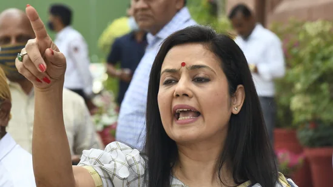
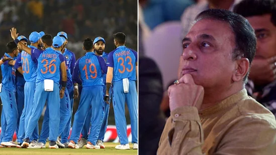
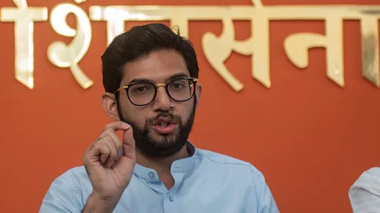
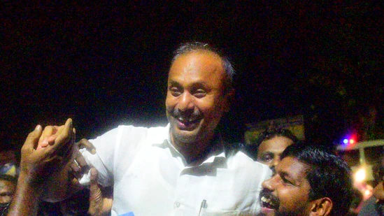
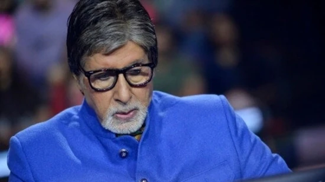

Two World War 2-era planes were reduced to particles as they collided midair at an air show in Dallas on Saturday. The planes involved in the horrific crash caught on camera were a Boeing B-17 Flying Fortress and a Bell P-63 Kingcobra. The entire incident has been caught on camera as the planes were part of the airshow. Officials have not confirmed casualties but according to reports at least six people were on board and they are all feared dead.
US Midterm Elections: Cortez Masto defeated Republican challenger Adam Laxalt, a former state attorney general who was endorsed by former President Donald Trump.
Democrats will keep their narrow Senate majority for the next two years, CNN projects, after victories in close contests in Nevada and Arizona. Democrats now have 50 Senate seats to Republicans' 49 seats.
TMC's Mahua Moitra is among several petitioners in the Supreme Court who have challenged the Gujarat government's decision to grant remission to the 11 convicts in the Bilkis Bano case.
Gavaskar, who himself has said that there is a need to change the mindset including some personnel in the T20I side, said there is no need for a knee-jerk reaction and demand for an entirely new team. India, the only team to advance to the semi-finals with four wins under their belt, were thrashed by England in the knockout match.
The legendary Sunil Gavaskar agreed that Team India's performance in the T20 World Cup was not on the expected lines but it wasn't so bad that the players will be targeted. Gavaskar, who himself has said that there is a need to change the mindset including some personnel in the T20I side, said there is no need for a knee-jerk reaction and demand for an entirely new team. India, the only team to advance to the semi-finals with four wins under their belt, were thrashed by England in the knockout match. It was reduced to a no-contest as England openers Alex Hales and Jos Buttler struck a record opening stand to chase down the 169-run target in 16 overs with all 10 wickets in hand.
India's approach at the top of the order was heavily criticised and so was their selection of fast bowlers. There was no express fast bowler in India's squad who could have exploited the bounce in Australian conditions and prized out a wicket against the run of play.
"None of these questions would have come if we had won the match. You lose one match and we start taking potshots at the team," Gavaskar said on India Today.
The former India captain, however, pointed out the issues that need to be addressed going ahead if India want to win their first ICC trophy in more than a decade the next time around.
"I know there are issues that can be looked at, for example the workload management thing. I think we should also look at the number of members we carry. Too many talking heads can confuse players. These are things that the powers that be should be thinking but let's not talk about wholesale changes just because we have lost. If we had gone to the final, we would have been talking about who should be playing in the XI. We are very famous for these knee-jerk reactions and having a go at our team when we lose, don't think it's the right way. I know we need to look at measures to strengthen our teams and for that if we have to take hard calls, other than you and me there is a selection committee that is appointed so they will have to take the hard calls," he added.
The first ever Binod Kanoria Awards for Children’s Literature held on November 12 at the National Centre for Performing Arts in Mumbai. Based on the philosophy that children’s literature is a unique space in the literary world that deserves to be honoured, the awards also serve the important function of celebrating the work of Indian authors and illustrators
Mumbai: The adventures of a happy street dog whose life suddenly turns upside down. A music-loving buffalo who is kidnapped and keeps local cops on their toes. An unlikely friendship forged amidst conflict in Manipur. These were just some of the engaging narratives and imaginative illustrations that were felicitated at the first ever Binod Kanoria Awards for Children’s Literature on November 12 at the National Centre for Performing Arts in Mumbai.
Human heart beat is the first and last sign of life and heart is a very selfless organ as even though it is filled with blood, it doesn't take the oxygen from the blood which is there in the chambers. It pumps the blood to the main artery called aorta, from aorta three coronary arteries arise and these coronary arteries supply the oxygen and nutrients to the heart muscle
The blockages due to cholesterol and or blood clots inside these coronary arteries cause heart attack. The cholesterol deposition happens over decades due to the risk factors like, age, family history, diabetes mellitus, smoking (tobacco in any form), high blood pressure, high blood cholesterol, lack of exercise, unhealthy food habits, stress, excess alcohol etc which means, we have decades of time to control these risk factors to prevent the blockages. In an interview with HT Lifestyle, Dr Vithal D Bagi, Senior Consultant and Interventional Cardiologist (MD, DM Cardiology, DNB Cardiology) at Apollo Hospitals in Bangalore, explained, “Over and above the cholesterol blockages, clots form which leads total or near total occlusion of the coronary arteries. That results in heart attack means death of heart muscle tissue due to the loss of blood supply.”
Bejan Daruwala's son Chirag Daruwala writes down weekly horoscope predictions on HindustanTimes.com. Find out what the planets have predicted for these signs from 14th to 20th November, 2022.
Countering criticism from the erstwhile MVA leaders, BJP's Chitra Kishor Wagh said the Uddhav government submitted the proposal for this project two days after the deadline as everyone was busy ‘saving the government’.
The ICC is keeping the option of a reserve day open but has tried to make sure that the T20 World Cup 2022 final gets over on Sunday itsel
On November 11, the Supreme Court ordered the release of all the remaining six convicts, mirroring the reasoning of poor health and good behaviour it had cited in May in the release of another convict in the assassination case.
China's Guangzhou near Hong Kong, shut down schools, bus and subway service. Flights to Beijing and other major cities have been cancelled. Chongqing closed schools in Beibei district. Residents were barred from leaving apartment compounds in Yubei district all due to spike in Covid-19 cases
Everyone in a district of 1.8 million people in China’s southern metropolis of Guangzhou was ordered to stay home for virus testing Saturday and a major city in the southwest closed schools as another rise in infections was reported.
Amitabh Bachchan spoke about late director Rakesh Sharma, known for directing films such as Mr Natwarlal and Yaarana. The actor said that he 'shall hesitate to go to his funeral'
Actor Amitabh Bachchan remembered his friend, late director Rakesh Sharma, who died at the age of 81. Taking to his blog, Amitabh on Saturday night called Rakesh 'a most affable and kind-hearted human' but added that he 'shall hesitate to go to his funeral'. Rakesh is known for directing films such as Mr Natwarlal, Yaarana, Khoon Pasina, and Do Aur Do Paanch. (Also Read | Amitabh Bachchan remembers Puneeth Rajkumar, says he had the most endearing smile. Watch)
Prince Harry-Meghan Markle: A report alleged that Prince Harry is trying to be careful not to make any mistake.